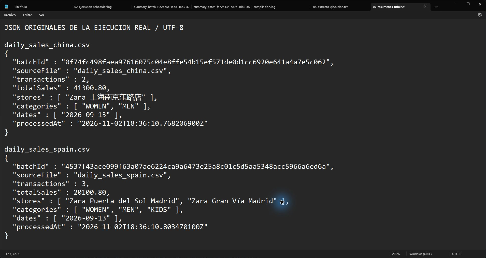
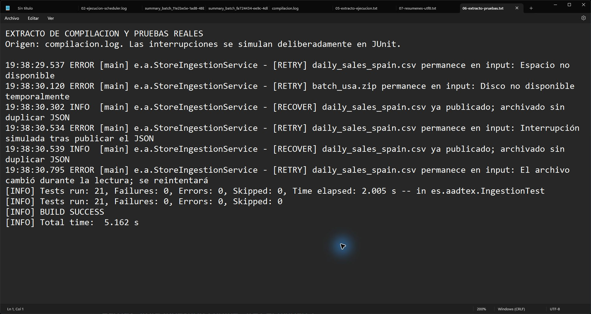

Pablo Eugenio Escolar Carrellan · 2ºDAM · Acceso a Datos
AadTex Store Ingestion Engine · App 1
Repositorio: https://github.com/lPablo27l/Acceso-a-datos
Verificación: 2 de noviembre de 2026
Automatizar la ingestión de ventas de tiendas internacionales sin intervención manual. Se implementan los ocho requisitos: tareas programadas, NIO.2, ZIP en flujo, AES-128 en RAM, lectura UTF-8, copia JPG con buffer de 4 KB, generador de pruebas y publicación JSON en un bucket local.
El resultado verificado es de cuatro lotes válidos, nueve transacciones, cuatro firmas copiadas y un archivo vacío aislado. España suma 20100.80; China 41300.80; el financiero 95000.00; USA 68450.75. El acumulado es 224852.35. El formato de entrada no especifica moneda.
AadApplication habilita el Scheduler. MultiLanguageDataGenerator crea los ocho ficheros de prueba y la clave del ejercicio una sola vez. StoreIngestionScheduler espera a que termine el arranque y llama al motor cada cinco segundos. StoragePaths reúne las rutas y los movimientos NIO.2.
StoreIngestionService ordena la entrada, copia las firmas sueltas y procesa CSV, ENC o ZIP. CsvSalesReader valida cabecera, campos, importes y fechas. Usa un decodificador UTF-8 estricto y BigDecimal. CryptoService aplica AES/ECB/PKCS5Padding y la clave de 16 bytes indicada; el contenido descifrado se lee con ByteArrayInputStream y no se guarda en disco.
SignatureService combina streams con buffer y un array de 4096 bytes. Valida los marcadores de inicio y fin JPEG, con un límite de 32 MiB. CloudBucketService escribe el resumen en un temporal UTF-8 antes de moverlo al bucket. El CSV interno del ZIP se consume con ZipInputStream sin crear un CSV temporal; se revisan también pareja de nombres, rutas, truncamiento y CRC.
BatchIdentity calcula SHA-256 del nombre del fichero, un separador y los bytes originales. Se lee con un buffer de 4096 bytes, sin cargar imágenes o ZIP completos. El identificador se usa en el nombre del JSON. El mismo nombre y contenido produce la misma identidad, y un contenido distinto produce otro lote.
Si el JSON ya está publicado, el siguiente ciclo o un reenvío termina el archivado sin volver a escribir el resumen. Esto conserva su marca temporal y evita duplicados. Si el programa se detiene después de copiar la firma del ZIP pero antes de publicar el JSON, el nuevo intento reutiliza la firma idéntica o instala la firma validada y continúa.
BatchValidationException representa datos inválidos y provoca la alerta simulada y el aislamiento en error/. Los fallos de acceso o publicación se registran como [RETRY] y mantienen el lote en input/. Antes de publicar se recalcula la huella para detectar que un productor cambió el fichero durante la lectura.
Se ejecutaron 21 pruebas JUnit, sin fallos, errores ni pruebas omitidas. Cubren datos internacionales, totales, AES, copia JPEG byte a byte, CSV inválido, ZIP truncado/peligroso, firma pendiente, límites, reenvíos, contenido modificado y recuperación de interrupciones simuladas.
El JAR se ejecutó como proceso real de Spring Boot: el hilo programado procesó los ocho archivos iniciales y los ciclos siguientes encontraron cero entradas. Después se reinició sin cambiar los JSON y se reenvió el CSV original de España. Los nombres y hashes SHA-256 de los cuatro resúmenes permanecieron iguales. Las excepciones de disco o interrupción de las pruebas son simuladas deliberadamente; no son fallos de la demostración real.
Las capturas son originales de Windows, con el texto ampliado en Bloc de notas. Los archivos de extractos indican su fuente; los registros íntegros y los JSON se adjuntan en evidencias/. No se recreó una terminal ni un IDE.
El log muestra Scheduler, buffer de 4096 bytes, ZIP, AES en RAM, los cuatro importes y el fichero de cero bytes aislado. Los dos últimos escaneos están separados por cinco segundos.

Se conservan los caracteres chinos y «Gran Vía». Ambos JSON incluyen un identificador SHA-256, la fecha original de ventas y el instante real de procesamiento.

El extracto identifica las interrupciones simuladas, los reintentos y las recuperaciones. El resultado final es Tests run: 21, Failures: 0, Errors: 0, Skipped: 0 y BUILD SUCCESS.
Descomprimir ra1_act1.zip, entrar en su carpeta y abrir iniciar.cmd con Java 21 disponible. El JAR de dist/ incluye sus dependencias y puede arrancar sin Internet. Para otra demostración, nueva-demo.cmd utiliza una carpeta distinta. Para compilar: mvnw.cmd clean verify; para ejecutar desde fuentes: mvnw.cmd spring-boot:run.
En la defensa se debe explicar qué activa @EnableScheduling, la diferencia entre fixedRate y fixedDelay, cómo se cierran los flujos, por qué se usa UTF-8 y BigDecimal, cómo se lee un ZIP sin extraerlo y por qué una huella no es un cifrado. DEFENSA.md incluye respuestas y un guion de demostración.
Se usa ./store_data para que funcione al descomprimir, con ruta absoluta configurable. Las firmas se publican en output/processed/signatures/, conforme al requisito principal. El bucket mantiene 2026/09 como pide el ejercicio. El correo y el bucket se simulan localmente.
Los límites son 16 MiB para CSV/cifrado y 32 MiB por firma; el CSV admite una transacción por línea y campos entrecomillados. La clave fija y ECB reproducen el formato del ejercicio. Las firmas son ficticias y sólo se validan sus marcadores JPEG. La recuperación está diseñada para una sola instancia y presupone que la publicación confirmada permanece en el bucket; no garantiza transacciones distribuidas, durabilidad física ante pérdida de energía o recuperación de archivos borrados/manipulados externamente.
1. Scheduler: AadApplication y StoreIngestionScheduler.
2. NIO.2: StoragePaths y StoreIngestionService.
3. ZIP: StoreIngestionService.processZip.
4. AES en RAM: CryptoService y processSales.
5. CSV UTF-8: CsvSalesReader.
6. JPG y buffer 4 KB: SignatureService.
7. Generador: MultiLanguageDataGenerator.
8. JSON y bucket local: CloudBucketService.